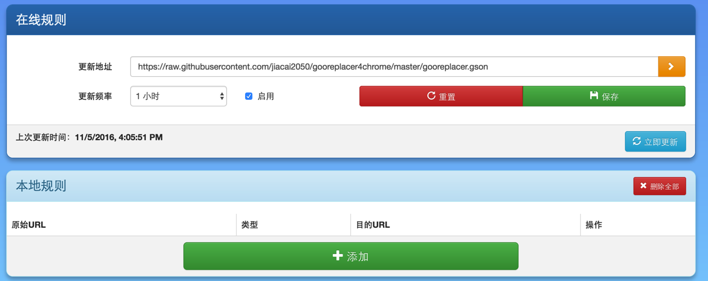

1. 为什么要开发gooreplacer？
众所周知，Google 在某国造到全面封杀，导致无法访问 Google 的一切资源，如果一个网站（比如stackoverflow、reddit）引用了 Google 提供的 JS、CSS 库，那么页面加载就会变得巨慢。


除了 Google 被墙外，还有很多常用服务也未能幸免，比如：gravatar、twitter 等。 gooreplacer 的作用就是在浏览器发起请求时，去检查该请求是否为被墙服务，如果是，替换为国内的 CDN，目前使用的是科大公共库。感谢科大！🙏
gooreplacer 默认有以下替换规则：
fonts.googleapis.com-------------->fonts.lug.ustc.edu.cn
ajax.googleapis.com--------------->ajax.lug.ustc.edu.cn
themes.googleusercontent.com------>google-themes.lug.ustc.edu.cn
fonts.gstatic.com----------------->fonts-gstatic.lug.ustc.edu.cn
www.gravatar.com------------------>gravatar.lug.ustc.edu.cn
platform.twitter.com/widgets.js--->cdn.rawgit.com/jiacai2050/gooreplacer/gh-pages/proxy/widgets.js
apis.google.com/js/api.js--------->cdn.rawgit.com/jiacai2050/gooreplacer/gh-pages/proxy/api.js
apis.google.com/js/plusone.js----->cdn.rawgit.com/jiacai2050/gooreplacer/gh-pages/proxy/plusone.js
2. 为什么要使用gooreplacer？
但如果你一直用的是免费的vpn、goagent等，那么gooreplacer绝对适合你，gooreplacer可以让你秒开：
除了默认规则外，gooreplacer 还支持自定义规则
世界是残酷的， 我们(programmer)有理由把它变得美好些。Enjoy！
3. 作者与贡献者
gooreplacer由@我一个人独立开发，当然少不了网友的支持：
- 感谢@jzhone耐心为gooreplacer测试，并推荐使用科大库；
- 感谢@Semidio曾把Chrome版本上传到WebStore应用商店中去，现已转交到我的 Google 账户下；
- 感谢@艾蔓草为gooreplacer提的建议与测试。
4. 支持与维护
我最初开发gooreplacer是因为不能愉快地浏览国外一些网站，加上自己的热情，gooreplacer的功能越来越丰富，我是由衷的开心。虽然还有些bug没有解决，但是我今后一定会持续更新的。
如果gooreplacer给你的生活、学习效率带来提高，我无耻地希望你能“慷慨解囊”，拿起你的支付宝钱包，打赏点零花钱请我吃个雪糕，当然这是完全自愿的。我只是想证明：我也在改变这个世界！

如果你有使用gooreplacer方面的任何问题，或有什么好的建议，可以在下面留言（非常不幸，本网站使用的 disqus 评论系统被墙）。
除了评论外，还可以发邮件或去 Github 提 issues 来与我交流。让我们一起改进、完善gooreplacer。:-)